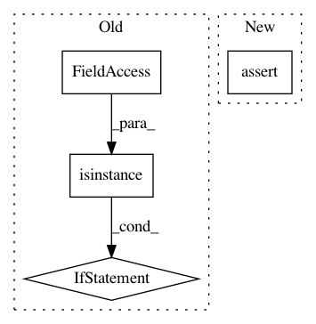

af461df627ef660d1a71b6981dedb4e4b504ba9a,txtgen/modules/connectors/connectors.py,StochasticConnector,_build,#StochasticConnector#Any#,256
Before Change
sampler = get_function(self.hparams.distribution, modules)
if sampler is distributions.sample_gaussian:
if not isinstance(inputs, tuple):
raise ValueError(
"Gaussian connector requires tuple input tensors.")
if len(inputs) == 2:
input_mu, input_log_var = inputs
output = sampler(input_mu, input_log_var)
After Change
output = inputs.sample()
try:
nest.assert_same_structure(inputs, self._decoder_state_size)
except (ValueError, TypeError):
flat_input = nest.flatten(inputs)
output = nest.pack_sequence_as(
self._decoder_state_size, flat_input)
In pattern: SUPERPATTERN
Frequency: 4
Non-data size: 4
Instances
Project Name: asyml/texar
Commit Name: af461df627ef660d1a71b6981dedb4e4b504ba9a
Time: 2017-09-25
Author: junxianh2@gmail.com
File Name: txtgen/modules/connectors/connectors.py
Class Name: StochasticConnector
Method Name: _build
Project Name: aleju/imgaug
Commit Name: b0f5220c429de3161b410378ecad277c3a50bf46
Time: 2019-08-13
Author: kontakt@ajung.name
File Name: imgaug/random.py
Class Name:
Method Name: polyfill_random
Project Name: chainer/chainercv
Commit Name: 8a2521e08179f42633b04d38bc38509105b55d1b
Time: 2017-05-31
Author: Hakuyume@users.noreply.github.com
File Name: tests/utils_tests/iterator_tests/test_apply_prediction_to_iterator.py
Class Name: TestApplyDetectionLink
Method Name: test_apply_prediction_to_iterator
Project Name: maciejkula/spotlight
Commit Name: daa722049a256a6389ee4892cd873e5fcfb9a4ba
Time: 2018-05-29
Author: nicolai.tesela@gmail.com
File Name: tests/test_evaluation_metrics.py
Class Name:
Method Name: test_sequence_precision_recall